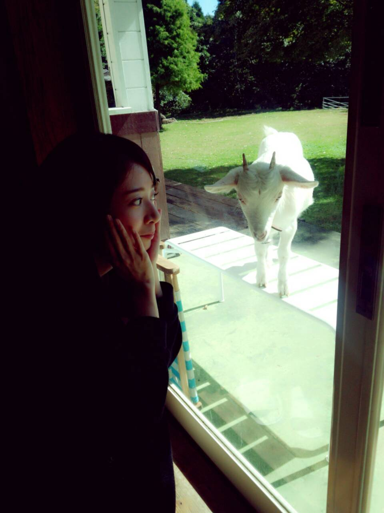

| 2013/11 20 Wed | 橋本奈々未 (´_ゝ｀) クリスマスが近付いてますね |
ここ一週間、専ら外食だったよ(｀_´)ゞ
若月とれいかと晩ご飯、
ひなちゃんと晩ご飯、
まいまいとの夜食、
まいやんさゆりんまなつともんじゃ、
まいまいせいらりんと晩ご飯...
わー、体に悪いのは分かるんだけど、お仕事終わりにはどうしてもがっつり食べたくなっちゃうの(;_;)
控えます。もうさすがに。(´・ω・｀)
日曜日にはお茶会＆サイン会がありました♪
ありがとうございました(*'-')
1対5で神経衰弱しながらお話とは、初めての経験！笑
サイン会は、一人一人ゆったり話せたね♪
二期生はお見立て会をしたようで...
懐かしいねぇ(゜゜)
私たちは初めてのイベントがお見立て会だったからガチガチに緊張してたけど、
二期生は代々木とか色んなステージを経験した上でのお見立て会だよね、どんな感じだったんだろう？
どんな感じでした？？
一期生のお見立て会、二期生のお見立て会
両方行ったよ！って方とかいるのかな？？
時の流れを感じるねー！w=(゜o゜)=w
最近余裕があったから、
豆乳とチョコを用意して
今月発売の雑誌をゆったり読んだの。
とってもくつろいでる！って感じがして幸せだったー。(*⌒▽⌒*)
明日はヤングジャンプ発売です！
表紙と巻頭に橋本がお邪魔しています！
初めての単独表紙をさせてもらいました((o(^^)o))♪
ありがとうございます！m(_ _)m
熊本に行って撮影してきたんだよー♪
阿蘇山は寒かったけど、頑張ったのでみてくださいっ(。・_・。)ノ

撮影場所にヤギさんがいらっしゃった(゜゜*)
窓から見てたら、近くまできてくれたの♪かわいかった♪♪
熊本楽しかったなぁ〜！
みりあがね、今度会ったら修学旅行？のお土産くれるんだってー！
可愛くない？(゜゜*)笑
私も旅行したいな〜！
日曜日をもって、せっちゃんとゆきなが卒業しました。
せっちゃんは、せっちゃんのことを求めてる場所がたくさんあると思います。応援しています！！
違うステージにはなるけど、一緒にこれからも頑張ろう！！！
温泉旅行、実現しよ！！
ゆきな、ゆきなとは一緒に帰ったり、下北沢行ったりしたね！
またあのゆるい感じでゆるい話したいよ！笑
ゆきなが目指して進む道が明るくありますように。また顔見せてくれるの待ってるよ！
私もがんばります！